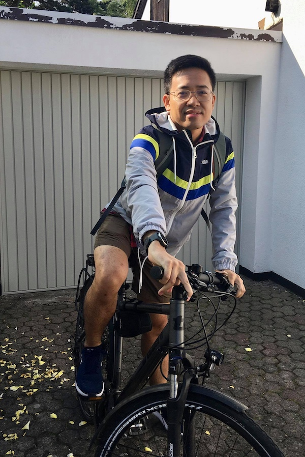

I am currently at BlueRock Security. At BlueRock I have been working on specifying and verifying the NOVA microkernel. NOVA can be used as the foundation of a concurrent virtualization stack to provide strong security guarantees, such as to isolate modern AI (LLM) agents. Follow the NOVA formal verification efforts at BlueRock here.
I did my PhD at the Max Planck Institute for Software Systems (MPI-SWS) and UdS Graduate School of Computer Science in Saarbrücken, Saarland, Germany from April, 2015 to February, 2022. My advisor was Prof. Dr. Derek Dreyer, who leads the "Foundations of Programming" group.
I worked program logics based on Iris for relaxed memory models, under the RustBelt project. My doctoral thesis is Scaling Up Relaxed Memory Verification with Separation Logics. My main interests are in program semantics, formal software verification, type theory, and computational logic. I also have broader interests in cryptography, security, and software design and development.
I previously received my BSc and MSc in Computer Science from University of Science, HCMC, Vietnam.
